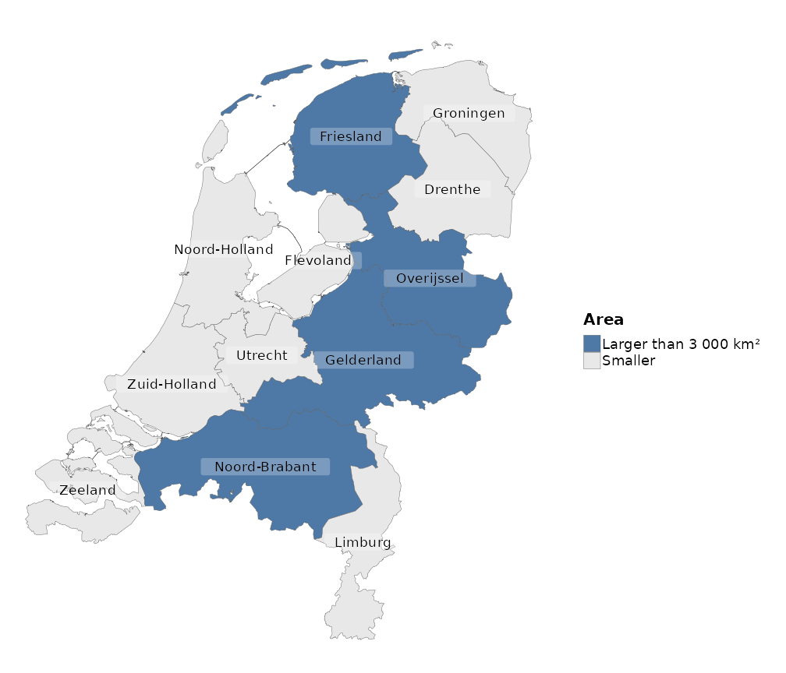
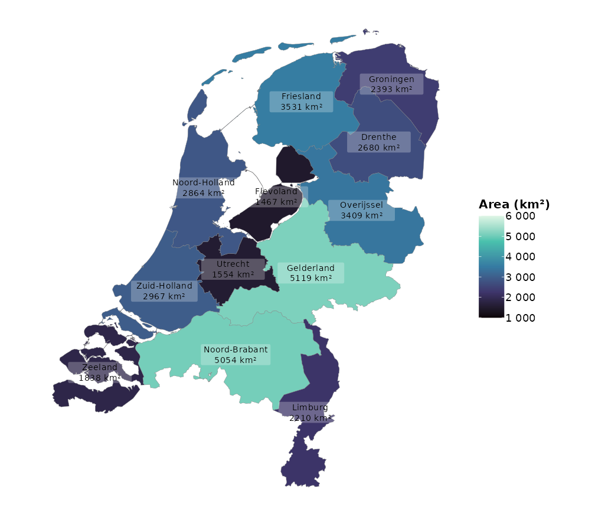
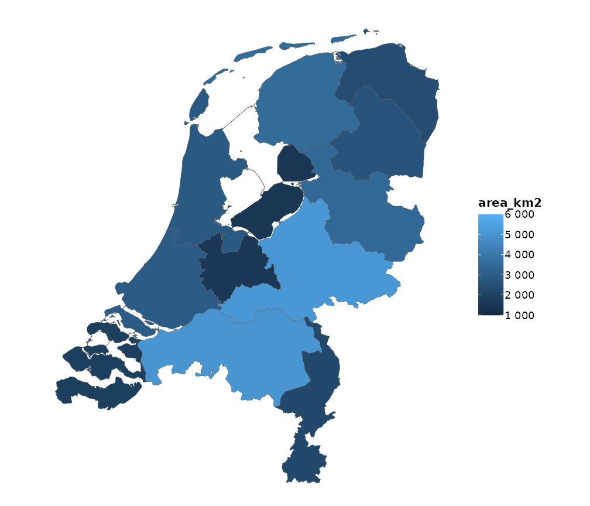
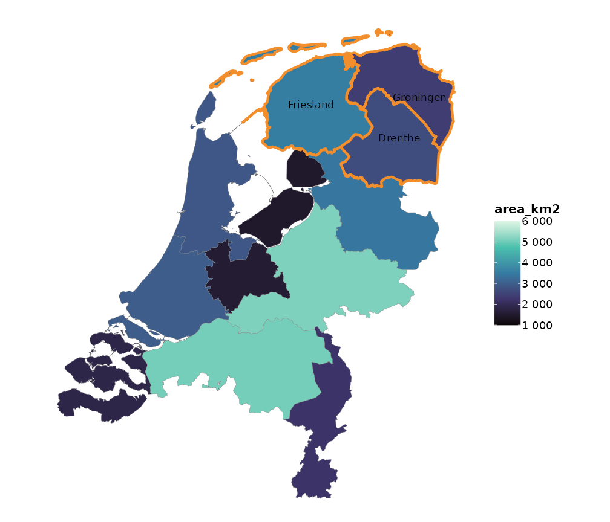

Geographic data of class sf, from the sf package,
become maps in plot2(). This article uses the data set
netherlands, which contains the twelve provinces of the
Netherlands with their area:
netherlands
#> Simple feature collection with 12 features and 2 fields
#> Geometry type: MULTIPOLYGON
#> Dimension: XY
#> Bounding box: xmin: 3.358378 ymin: 50.75037 xmax: 7.227498 ymax: 53.55523
#> Geodetic CRS: WGS 84
#> First 10 features:
#> province area_km2 geometry
#> 1 Groningen 2393.481 MULTIPOLYGON (((6.778757 53...
#> 2 Friesland 3531.061 MULTIPOLYGON (((6.176871 53...
#> 3 Drenthe 2680.343 MULTIPOLYGON (((6.493505 53...
#> 4 Overijssel 3408.845 MULTIPOLYGON (((6.136821 52...
#> 5 Flevoland 1466.553 MULTIPOLYGON (((5.748807 52...
#> 6 Gelderland 5118.927 MULTIPOLYGON (((5.876205 52...
#> 7 Utrecht 1553.996 MULTIPOLYGON (((5.021543 52...
#> 8 Noord-Holland 2864.292 MULTIPOLYGON (((5.054713 52...
#> 9 Zuid-Holland 2967.352 MULTIPOLYGON (((4.547322 52...
#> 10 Zeeland 1838.376 MULTIPOLYGON (((3.842477 51...A first map
Without other arguments, the first numeric column becomes the
category and the first character column becomes the data
labels. The labels are placed at the centre of each area:
netherlands |>
plot2()
#> Using category = area_km2
#> Using datalabels = province
#> Assuming datalabels.centroid = TRUE. Set to FALSE for a point-on-surface placing of datalabels.For maps, plot2() removes the axes, places the legend on
the right and uses a continuous colour scale for a numeric
category.
Category and colours
category accepts a column or a calculation, as for other
data:
netherlands |>
plot2(category = ifelse(area_km2 > 3000, "Larger than 3 000 km²", "Smaller"),
colour_fill = c("#4E79A7", "#E8E8E8"),
category.title = "Area")
#> Using datalabels = province
#> Assuming datalabels.centroid = TRUE. Set to FALSE for a point-on-surface placing of datalabels.
colour_fill sets the colours of the areas and
colour sets the colour of the borders. The options
plot2.colour_sf_fill and plot2.colour_sf set
their defaults for all maps.
Data labels
datalabels sets the text of the labels, or removes them
with datalabels = FALSE:
netherlands |>
plot2(category = area_km2,
category.title = "Area (km²)",
datalabels = paste0(province, "\n", round(area_km2), " km²"),
datalabels.size = 2.5,
colour_fill = "mako")
#> Assuming datalabels.centroid = TRUE. Set to FALSE for a point-on-surface placing of datalabels.
The labels are placed at the centre of each area
(sf::st_centroid()). For areas with an irregular shape, the
centre can lie outside the area;
datalabels.centroid = FALSE places the labels at a point
that is always on the area (sf::st_point_on_surface()).
Coordinate reference system
crs transforms the data to another coordinate reference
system with sf::st_transform(). The data set
netherlands uses the Dutch national grid (EPSG:28992); this
map uses the global longitude and latitude system (EPSG:4326):
netherlands |>
plot2(crs = 4326, datalabels = FALSE)
#> Using category = area_km2
Adding layers
add_sf() adds another layer of sf data to a
map, for example to outline a selection of areas:
northern_provinces <- netherlands[netherlands$province %in% c("Groningen", "Friesland", "Drenthe"), ]
netherlands |>
plot2(datalabels = FALSE, colour_fill = "mako") |>
add_sf(northern_provinces,
colour = "#F28E2B",
colour_fill = NA,
linewidth = 1,
datalabels = province)
#> Using category = area_km2
The result is a ggplot object, so
ggplot2::geom_sf() and other ggplot2 functions
can be added as well.